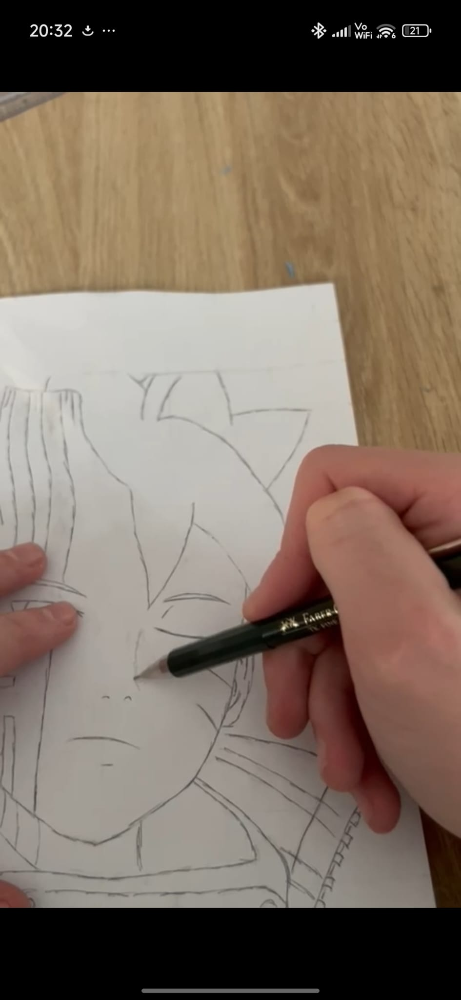
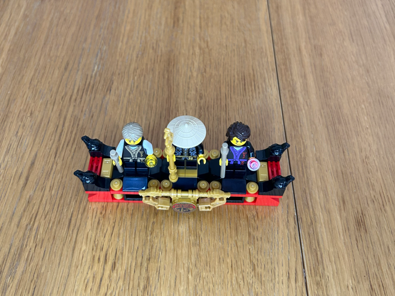
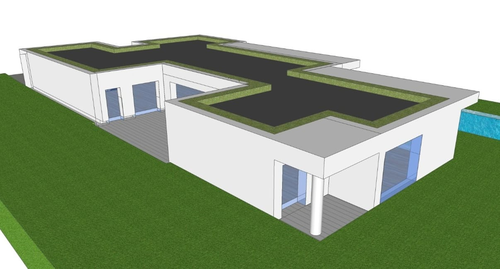
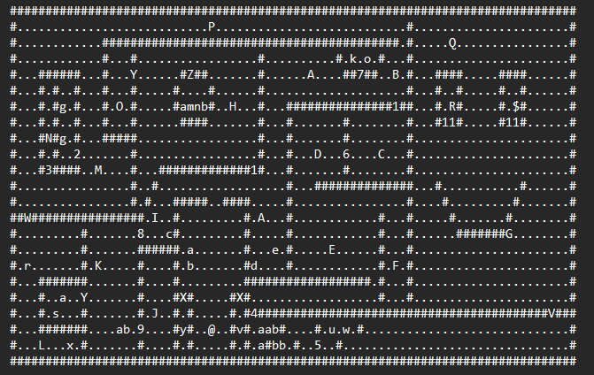
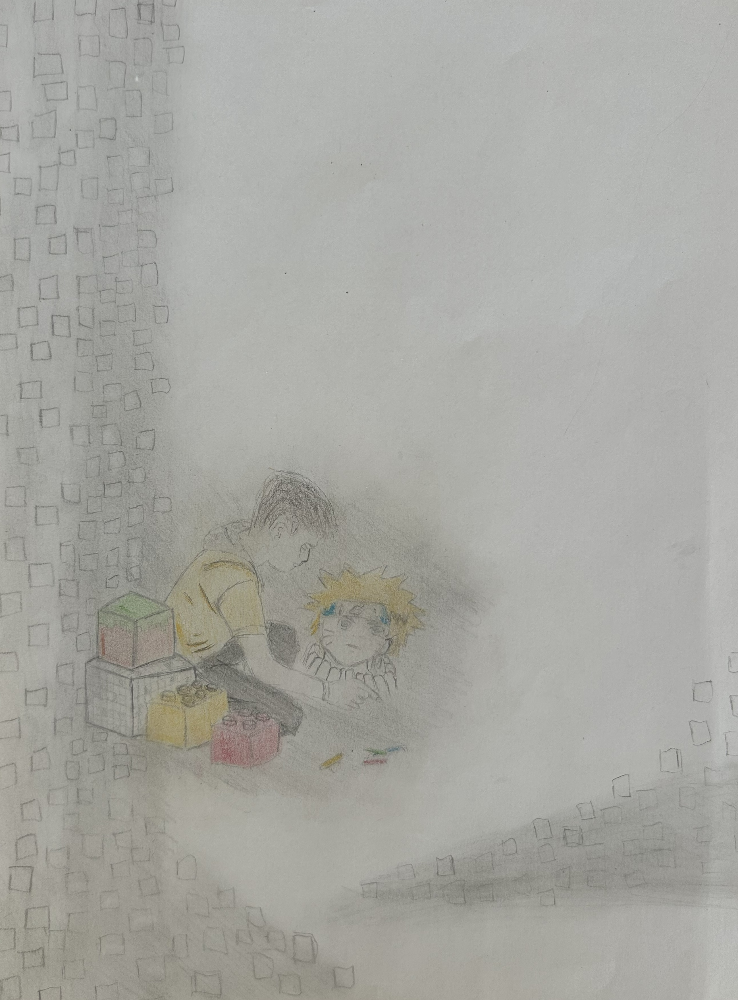
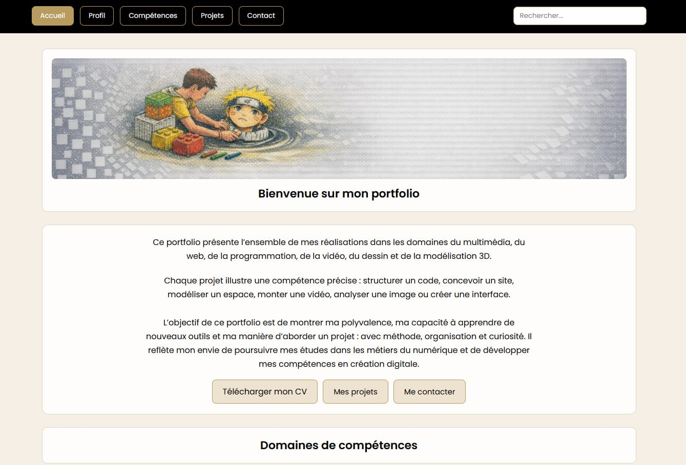
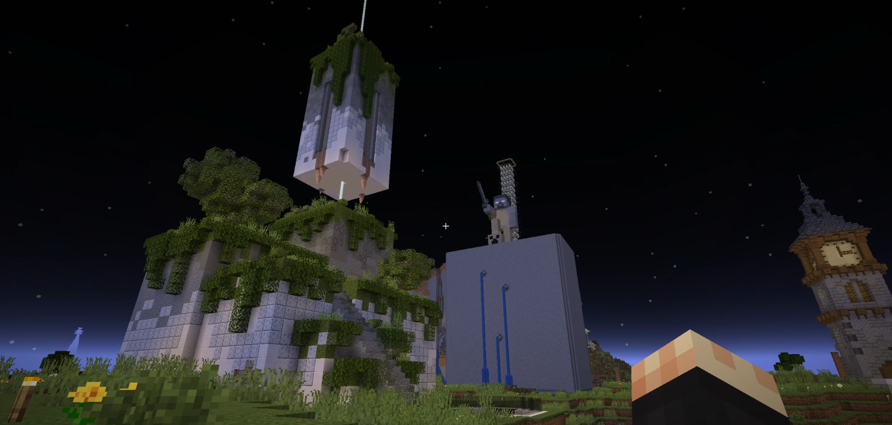
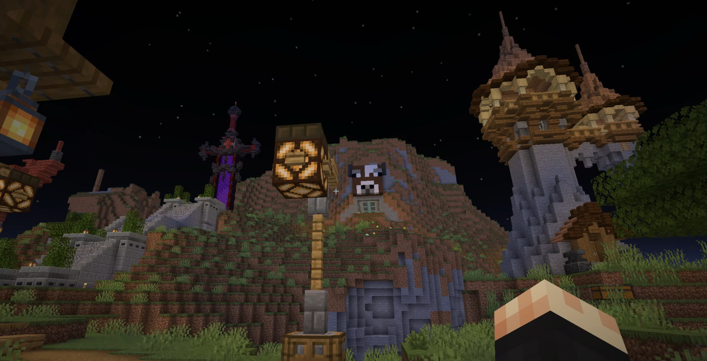
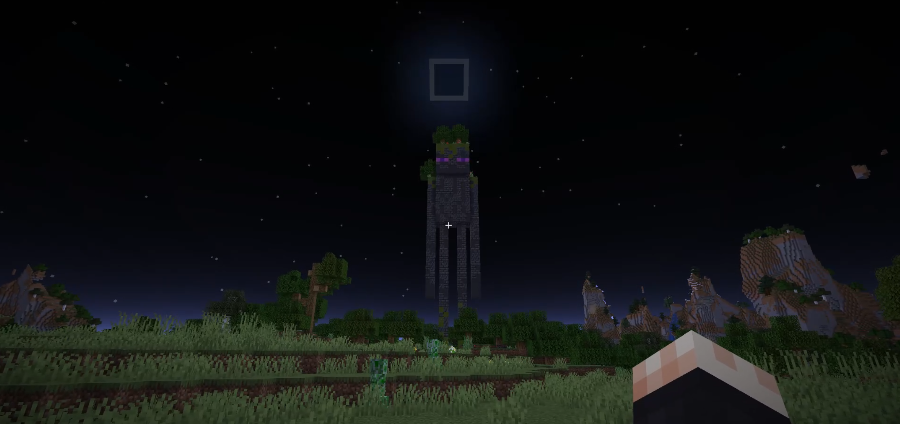
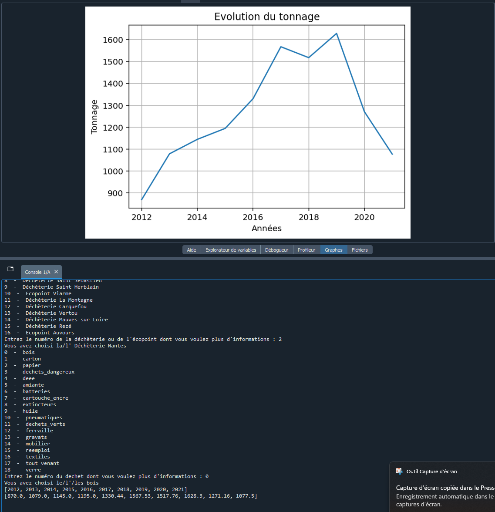

Ce portfolio présente l’ensemble de mes réalisations dans les domaines du multimédia, du web, de la programmation, de la vidéo, du dessin et de la modélisation 3D.
Chaque projet illustre une compétence précise : structurer un code, concevoir un site, modéliser un espace, monter une vidéo, analyser une image ou créer une interface.
L’objectif de ce portfolio est de montrer ma polyvalence, ma capacité à apprendre de nouveaux outils et ma manière d’aborder un projet : avec méthode, organisation et curiosité. Il reflète mon envie de poursuivre mes études dans les métiers du numérique et de développer mes compétences en création digitale.
Développement Web
Design graphique
Audiovisuel

Dessin

Site Web

Montages Vidéo

3D

Programmation
Mon profil
Je m’appelle Jules et je suis passionné par la création numérique sous toutes ses formes : dessin, vidéo, modélisation 3D, programmation et développement web. J’aime comprendre comment les choses fonctionnent, construire étape par étape, organiser un projet et donner une forme concrète à une idée.
Résumé
- Licence informatique
- Bac général – spécialités Mathématiques et NSI
- Intérêt pour le web, le design et la vidéo
- Pratique d’outils créatifs et techniques
- Volonté de progresser sur des projets concrets
À propos
Mon parcours m’a permis d’explorer différents domaines : montage vidéo et création d’ambiances, modélisation 3D (architecture et univers virtuels), programmation (C++, JSON, interfaces interactives), développement web (HTML/CSS, responsive), dessin d’observation et reproduction fidèle.
Je cherche aujourd’hui à développer mes compétences dans les métiers du numérique, du design et du multimédia. Ce portfolio rassemble mes projets les plus représentatifs, réalisés au lycée, en licence informatique, en stage ou en autonomie.
Il reflète ma manière de travailler : rigueur, curiosité, patience et envie d’apprendre.
Formation
2025–2026 — Licence Informatique, Faculté des Sciences, Nantes
2022–2025 — Baccalauréat Général – spécialités Mathématiques et NSI, Lycée Renaudeau, Cholet
2022 — 3e, Collège Colbert, Cholet
2019–2021 — Classe Triathlon, Collège Victor Hugo, Issy-les-Moulineaux
Expérience professionnelle
En 2022, j’ai effectué mon stage de 3e dans un cabinet d’architecte, où j’ai découvert un environnement à la fois créatif et technique. J’y ai réalisé des modélisations 3D de maisons sur SketchUp, observé le dessin de plans et participé à des visites de chantier. Cette expérience m’a beaucoup intéressé car elle m’a permis de voir comment des idées prennent forme de manière concrète, grâce à des outils visuels et numériques.
En février 2026, j’ai travaillé chez B Solfin, fabricant et commerçant de vêtements made in France. J’y ai réalisé différentes missions comme la préparation de commandes, les envois de colis, le picking, le rangement et la manutention. Cette expérience m’a appris à être rigoureux, organisé et efficace dans un cadre professionnel.
Encadrement
J’ai eu l’occasion de faire quelques baby-sittings, ce qui m’a appris à être attentif, responsable et à m’adapter aux besoins des enfants tout en veillant à leur sécurité. J’ai aussi arbitré ponctuellement des équipes plus jeunes dans le cadre du basket. Cette expérience m’a demandé de faire respecter des règles, de rester calme, juste et concentré, tout en gérant des situations parfois rapides. Même si ces expériences sont restées ponctuelles, elles m’ont permis de développer mon sens des responsabilités et de prendre confiance dans des rôles d’encadrement.
Engagement
En 2024, j’ai obtenu le PSC1, ce qui m’a permis d’apprendre les gestes de premiers secours et l’importance de savoir réagir rapidement en cas d’urgence. Cette formation m’a sensibilisé à l’entraide, à la responsabilité et à l’attention portée aux autres. J’ai également participé à la Journée Défense et Citoyenneté, qui m’a permis d’aborder les questions de citoyenneté et d’engagement.
J’ai créé un jeu de type roguelike en C++ et je l’ai mis en fichier sur GitHub.
Ouverture au monde / Centres d’intérêt
Depuis plusieurs années, le sport occupe une place importante dans ma vie. J’ai suivi tout mon collège en classe triathlon, ce qui m’a appris la rigueur, la persévérance, l’organisation et le goût de l’effort. En 4e, j’ai également participé à un stage de triathlon dans les Alpes, avec de la natation intensive, des épreuves de biathlon, du trail et du bike & run. Cette expérience a renforcé mon endurance, mon sens du dépassement de soi et ma capacité à m’adapter à un cadre exigeant. En parallèle, j’ai pratiqué le basket en club pendant 6 ans, ce qui m’a aussi apporté le sens du collectif, l’engagement et la régularité.
Sur le plan culturel, je m’intéresse beaucoup au dessin, en particulier à l’univers du manga, ce qui nourrit aussi mon intérêt pour la création visuelle et numérique. J’aime observer les styles, reproduire des visuels et progresser vers la création de mes propres personnages et univers. Les voyages ont aussi beaucoup compté dans mon ouverture au monde : j’ai eu la chance de découvrir Stockholm, Hong Kong, New York, Bangkok et Madrid, et je partirai prochainement à Tokyo. Ces expériences nourrissent ma curiosité, mon imagination et mon regard sur différents univers culturels et esthétiques.
Langages informatiques
Outils
Compétences
Langues
Soft skills
certifications
La sélection de projets présentée ici rassemble mes réalisations en dessin, vidéo, modélisation 3D, programmation et création web. Chaque projet illustre une compétence précise : structurer un code, concevoir un site, modéliser un espace, monter une vidéo ou analyser une image. J’ai cherché à développer une approche polyvalente, mêlant technique et créativité, en explorant différents outils numériques et en apprenant à organiser un projet du concept à la réalisation.
Cette diversité reflète ma manière de travailler : comprendre un langage, expérimenter, progresser et produire des créations fonctionnelles et cohérentes.
Dessin
Sites Web
Montages Vidéo
3D
Programmation
Dessin & Illustration
Cette section rassemble mes travaux de dessin d’observation et de reproduction. J’y présente ma méthode : quadrillage, respect des proportions, construction du tracé, gommage et finitions. Ces projets mettent en avant ma précision, mon sens du détail, ma capacité à analyser une image et à structurer un dessin étape par étape.

Vidéo
Méthode complète
Mon dessin
Présentation de l’illustration créée pour le CV et le portfolio.

Galerie
Tous mes dessins
Vidéo Dessin – Reproduction d’après modèle
Cette vidéo détaille ma méthode de dessin d’observation : quadrillage, reproduction proportionnée, gommage et finitions.
Compétences mises en avant :
- observation fine et respect des proportions
- méthodologie de travail
- gestion des étapes d’un processus créatif
- mise en valeur visuelle (ombres, textures)
Mon dessin créé
Ce dessin réinterprèe une photo d’enfance où je dessinais Naruto à la craie dans la rue. J’y ai intégré des briques LEGO et Minecraft et une pixelisation pour évoquer la construction, l’assemblage et la création d’univers. Cette illustration m’a servie de base graphique et de fil conducteur pour mon CV et portfolio.
Compétences mises en avant :
Observation et analyse d’image : à partir d’une photo d’enfance
Réinterprétation et recomposition visuelle : transformer une scène réelle en illustration
Création d’une identité graphique : utiliser le dessin comme base visuelle
Lien entre tradition et numérique : relier un souvenir d’enfance à un parcours actuel en digital
Création Web
Dans cette rubrique, je présente mes projets web réalisés en HTML/CSS : minisites thématiques et création de mon portfolio personnel. Ces projets montrent ma capacité à structurer un site, à organiser des contenus variés, à intégrer des éléments multimédias, à travailler le responsive et à concevoir une navigation claire et efficace.
Site Brawl Stars
Mini site responsive HTML/CSS

Portfolio personnel
Un site qui rassemble mes projets et reflète mon parcours.
Projet web – Mini site responsive en HTML/CSS (NSI – Première)
Ce projet consistait à créer un mini site web en HTML et à intégrer des éléments responsive pour qu’il s’adapte aux différents formats d’écran. J’ai choisi le thème du jeu Brawl Stars et conçu plusieurs pages intégrant des bannières, des images, des vidéos et un menu avec une barre de recherche.
L’objectif était de structurer un site simple, fonctionnel et lisible, tout en respectant les bases du responsive design.
Compétences mises en avant :
- structuration d’un site en HTML
- mise en forme en CSS et adaptation responsive
- intégration d’images, de vidéos et de bannières
- création d’un menu avec barre de recherche
- organisation du contenu et hiérarchisation visuelle
- compréhension des principes d’ergonomie web
Projet web – Création de mon portfolio personnel (HTML/CSS)
J’ai conçu et développé mon portfolio personnel en HTML et CSS afin de présenter l’ensemble de mes réalisations : dessins, montages vidéo, projets de programmation, modélisations 3D et créations web.
J’ai choisi une mise en page sobre et structurée, tout en intégrant des éléments qui me représentent, comme la bannière illustrant mon enfance et mon goût précoce pour le dessin de mangas.
Le site inclut plusieurs fonctionnalités : téléchargement du CV, barre de recherche, navigation claire, intégration d’images, de vidéos et de sections thématiques.
Compétences mises en avant :
- conception et développement HTML/CSS
- organisation de contenus variés
- intégration multimédia
- création de fonctionnalités simples (recherche, téléchargement, navigation)
- réflexion sur l’ergonomie et l’expérience utilisateur
- création d’une identité visuelle personnelle
Vidéo & Montage
Dans cette rubrique, je présente différents projets vidéo réalisés à partir de captations personnelles, de montages accélérés, de stop motion ou de créations d’univers. Ces projets montrent ma capacité à structurer un récit visuel, à gérer le rythme, à intégrer du son, des transitions, du titrage et parfois une voix off. Ils illustrent mes compétences en montage (DaVinci Resolve), en organisation de rushs, en création d’ambiances et en mise en valeur d’un processus ou d’un univers.

Souvenir de voyage
Capturer un moment et en recréer l’atmosphère.
LEGO – Stop motion
Faire naître un objet image après image.

LEGO – Montage filmé
Montrer la construction d’un modèle, étape après étape.

Dessin – Processus complet
Montrer la réalisation d’un dessin étape par étape.
Vidéo Souvenir de voyage – Thaïlande, Île de Ko Tao – 2024
J’ai monté plusieurs séquences marines pour créer un souvenir visuel cohérent. Le montage alterne sons naturels, musique douce, fondus et titrage.
Compétences mises en avant :
- sélection et organisation de rushs
- mixage simple (sons naturels + musique)
- transitions fluides
- création d’une ambiance visuelle et sonore
Vidéo LEGO – Stop motion (photos étape par étape)
Cette animation stop motion montre la construction progressive d’un modèle LEGO à partir de photos prises à chaque étape. Le montage accéléré met en valeur la précision du processus.
Compétences mises en avant :
- organisation d’un flux d’images
- cadrage et cohérence visuelle
- montage vidéo (accéléré, transitions)
- rigueur, patience et gestion des détails
Vidéo LEGO – Montage filmé en accéléré
J’ai filmé le montage du set sous plusieurs angles, puis assemblé les séquences en accéléré. Les transitions en fondus permettent d’unifier les variations de cadrage. Le titre indique le nom du set.
Compétences mises en avant :
- captation multi-angles
- montage vidéo (fondus, rythme, titrage)
- mise en scène d’un processus manuel
- structuration d’un récit visuel simple
Montage vidéo – Processus de dessin
Cette vidéo montre les différentes étapes de construction d’un dessin, de l’observation aux finitions.
Compétences mises en avant :
- captation d’un processus créatif
- rythme du montage
- mise en valeur des étapes de réalisation
- présentation claire d’un travail visuel
Modélisation 3D
Cette rubrique présente mes projets de modélisation 3D, réalisés aussi bien dans un contexte professionnel (stage en architecture) que dans un univers créatif (Minecraft). J’y montre ma capacité à lire un cahier des charges, à réaliser des plans manuels et numériques, à modéliser des volumes en 3D, à organiser un espace et à concevoir des environnements cohérents.
3D architecturale
De l’esquisse au volume

Minecraft
Création d’un univers 3D cohérent

Projet de modélisation 3D architecturale – Stage de 3e
Ce projet a été réalisé lors de mon stage dans un cabinet d’architecture, à partir d’un cahier des charges précis fourni par l’architecte. J’ai d’abord dessiné les pièces à la main aux bonnes dimensions, puis réalisé un plan manuel complet.
J’ai ensuite produit un plan à plat sur Archicad avant de modéliser la maison en 3D avec SketchUp.
Compétences mises en avant :
- lecture et respect d’un cahier des charges
- réalisation de plans manuels à l’échelle
- utilisation d’Archicad pour la création de plans techniques
- modélisation 3D sur SketchUp
- compréhension des volumes, proportions et circulations
- rigueur, autonomie et méthode dans un contexte professionnel
Projet 3D – Conception d’un univers architectural dans Minecraft
Ce projet illustre ma capacité à concevoir un environnement 3D complet à partir d’un espace vide. J’ai travaillé la construction des volumes, la cohérence des zones, la circulation entre les espaces et l’harmonie visuelle de l’ensemble.
La vidéo sert ici à présenter le résultat, mais l’objectif principal est la création de l’univers lui-même.
Compétences mises en avant :
- conception d’espaces 3D cohérents
- gestion des volumes, proportions et perspectives
- organisation d’un environnement complexe (zones, chemins, repères)
- création d’ambiances visuelles (lumière, matériaux, couleurs)
- réflexion sur l’expérience utilisateur dans un espace virtuel
Vue 1

Vue 2

Vue 3
Programmation
Cette section regroupe mes projets de programmation réalisés en NSI et en licence informatique. Ils illustrent ma maîtrise des bases du code : manipulation de données JSON, création d’interfaces simples, développement d’un mini-jeu en C++, gestion d’interactions, IA basique, visualisation de données et structuration d’un programme. Ces projets montrent ma progression dans la logique algorithmique et la conception d’expériences numériques fonctionnelles.
Minijeu C++
Créer un jeu minimaliste où chaque symbole a un rôle.

Mini site JSON
Transformer des données en une interface simple et lisible.
Projet de programmation – Jeu de type roguelike en C++
J’ai créé un jeu de type roguelike en C++ en mode console. Le fichier principal du projet se trouve dans Projetv2.1.cpp.
Le joueur incarne un voleur qui doit s’infiltrer dans une banque, éviter les gardes et les caméras, récupérer du butin puis s’échapper. Le jeu utilise une carte ASCII, des déplacements au clavier, un système de vision, des monstres, des objets et une interface HUD.
Compétences mises en avant :
- programmation en C++
- conception d’un jeu en mode console
- gestion d’une carte, de collisions et de déplacements
- chargement de données depuis plusieurs fichiers
- logique de jeu, monstres, inventaire et affichage HUD
Projet de programmation – Mini site interactif en JSON (NSI – Première)
Ce projet consistait à créer un mini site capable d’exploiter une base de données en JSON pour afficher des résultats en fonction de variables choisies par l’utilisateur.
J’ai conçu un programme permettant de sélectionner un matériau, un type de déchet et une déchetterie, puis d’afficher automatiquement l’année et le tonnage correspondant.
Le site génère également un graphique associé aux données. Si la base ne fonctionne pas localement, la vidéo de démonstration permet tout de même de visualiser l’exécution complète du projet.
Compétences mises en avant :
- manipulation de données en JSON
- extraction et affichage dynamique d’informations
- génération de graphiques
- logique algorithmique
- structuration d’un programme et d’une interface simple
Cette interface permet de choisir une déchetterie ou un écopoint, puis un type de déchet, afin d’afficher l’évolution du tonnage par année à partir d’une base de données JSON.
Lieu sélectionné
Déchet sélectionné
Nombre d’années trouvées
Contact
Nom prénom : Jules Chupin
Mail : juleschupin@outlook.fr
Téléphone : 06 37 96 62 59